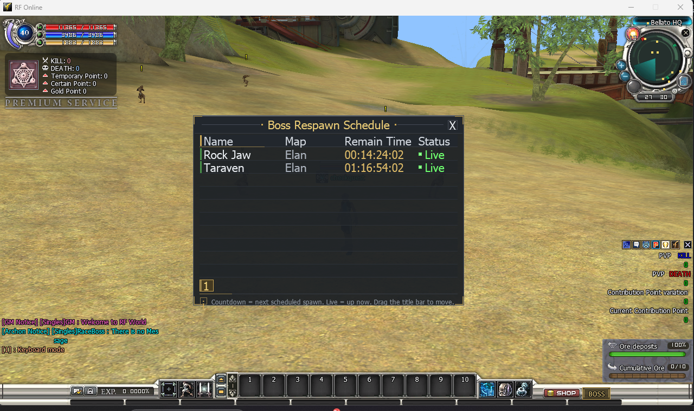
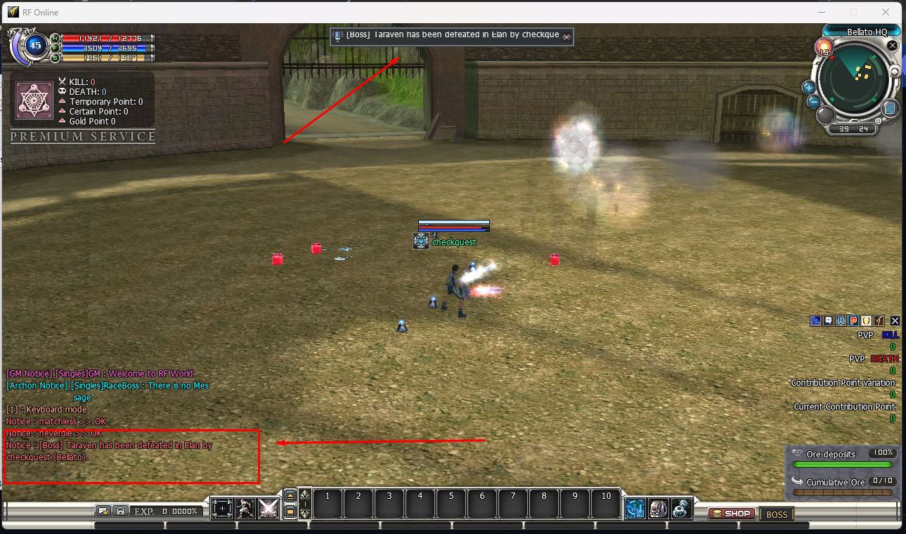

Boss Respawn Schedule
Boss Respawn Schedule

What it does — and why you would use it
Stock RF Online respawns pit bosses on each map's random monster regen — no fixed time, no announcement, no way to tell players when the next fight is. This module takes the pit bosses off the random regen and respawns them exactly on the times you write down:
- Weekly slots — recurring spawns like “every Friday at 21:30”.
- One-off events — exact date-and-time spawns like “2026-12-25 20:00” for a Christmas boss; each fires once and is remembered, so a server restart never spawns it twice.
- Auto-despawn — optionally kill the boss N minutes after spawn if nobody did, so stale bosses never clutter the map.
- Zone announcements — tell every player when a boss spawns and when it dies; the defeat line names the player who landed the killing blow and their race.
- Exactly one instance — every stock respawn path (the random regen and the boot-time boss schedule) is suppressed for managed bosses, so a slot spawns one boss — never a duplicate standing on top of it.
- An in-game schedule window — a BOSS button beside SHOP opens a panel listing every managed boss with an accurate countdown, so players never have to ask “when is Rock Jaw?”.
Notice : [Boss] Rock Jaw has appeared in Elan.
Notice : [Boss] Rock Jaw has been defeated in Elan by Artemis (Bellato).The defeat line credits the player the kill itself is credited to (the loot taker), with one of the three race names. When no player is credited — a guard tower finished the boss, for example — the line stays anonymous.

The schedule lives in one plain-text Lua file written for non-programmers. The old Odin-style BossRespawnManager.ini plus per-map .ini files still work exactly as before when the Lua file is switched off.
BossRespawn.lua has Enable = true, the zone follows that file and ignores BossRespawnManager.ini completely. With Enable = false the Lua file is ignored and the INI behaves exactly like it always did. The two can never fight over the same boss.How to activate it
-
Turn the Lua schedule on (recommended). Open .Server\Zoneserver\RF_Bin\Modules\BossRespawnManager\BossRespawn.lua in Notepad and set
Enable = truenear the top:
Save the file. A running Zone server re-reads it a moment later — no restart needed.BossRespawn = { -- Master switch for this file. true = the zone follows BossRespawn.lua. Enable = true, -
Or use the classic INI instead. Leave
Enable = falsein the Lua file, then open Modules\BossRespawnManager\BossRespawnManager.ini and set:
Each[General] Enable = 1 MapNum = 1 Map0 = ElanMap<n>name points at a per-map file in the same folder (hereElan.ini) holding the old Odin-format schedule. This path is kept for servers already running on the INI. -
Write your boss list. Add one block per pit boss under
Bosses =— see Write the schedule. -
Check it in game. Press the BOSS button beside SHOP: the window lists every managed boss with its countdown. A boss whose slot just passed spawns within a second of the save, and the zone gets the announcement line when
Announce = true.
BossRespawnManager.ini and BossRespawn.lua at startup — deleting either stops the server from booting. To switch the feature off, set Enable = false in the Lua file and Enable = 0 in the INI.How to write the schedule
Everything is one list of boss blocks. Copy a block, change the map / code / times, add as many as you like:
BossRespawn = {
Enable = true, -- master switch: true = the zone follows THIS file
Announce = true, -- tell the whole zone when a boss spawns / dies
Bosses = {
{
Map = "Elan", -- map name (the same name the old .ini used)
Code = "0AB07", -- pit boss monster code from the monster table
Weekly = { -- recurring weekly spawn times
{ day = "Friday", hour = 21, minute = 30 },
{ day = "Saturday", hour = 21, minute = 30 },
},
},
{
Map = "Elan",
Code = "0AF07",
DeathMin = 120, -- auto-kill 2 hours after spawn if nobody killed it
Weekly = {
{ day = "Friday", hour = 21, minute = 30 },
},
Events = { -- one-off exact-date spawns
"2026-12-25 20:00", -- Christmas event
"2026-12-31 23:00", -- New Year's Eve event
},
},
},
}| Key | Where | Meaning |
|---|---|---|
Enable | top | true = the zone follows this file and ignores the INI; false = this file is ignored. |
Announce | top | true = broadcast a line to every player when a managed boss spawns and when it dies. The defeat line carries the killer's name and race. |
AnnounceBlacklist | top | Boss codes that stay silent on death only (their spawn is still announced). |
Map | per boss | Map name, exactly as the old per-map .ini named it (for example Elan). |
Code | per boss | Monster record code of the pit boss (the same code the old .ini used). |
DeathMin | per boss | Kill the boss this many minutes after spawn if nobody did. 0 or omitted = never auto-kill. |
Weekly | per boss | List of { day, hour, minute }. day = "Sunday"…"Saturday" (or a number 0–6, 0 = Sunday), hour 0–23, minute 0–59. |
Events | per boss | List of one-off spawns as text "YYYY-MM-DD HH:MM". Each fires once, then is remembered — restarting the server does not spawn it again. |
- All times are the server PC's local time, 24-hour clock (
19= 7 pm). - Weekly only, Events only, or both — a boss spawns when the most recent slot or event time has passed since it last spawned.
- The server keeps its own memory. Last-spawn / killed state is written to a small per-map
.inibeside the config so a restart never re-fires an event or doubles a spawn. Do not hand-edit those files while the server is running. - Comments are your friend. Anything after
--on a line is ignored — label your bosses freely.
The in-game schedule window
A BOSS button sits immediately right of SHOP on the bottom bar. Pressing it opens the Boss Respawn Schedule panel (the screenshot above); pressing it again, the X, or Esc closes it. The window is draggable by its title bar and remembers where you put it between opens.
| Column | What it shows |
|---|---|
| Name | The boss's display name from the monster table. |
| Map | The map the boss is managed on. |
| Remain Time | A live DD:HH:MM:SS countdown to the next scheduled spawn slot. It ticks every second on your screen and is re-synced from the server every ~30 seconds while the window is open. |
| Status | Live the boss is up right now — the countdown then shows the next scheduled slot, i.e. when it respawns if the current one dies. Down the boss is waiting to respawn and the countdown is the respawn moment itself. |
BossRespawn.lua when its Enable = true, otherwise BossRespawnManager.ini. The UI can never disagree with the schedule the map really follows; with the module off the window simply says so.- Pagination. Ten bosses per page; the numbered tabs at the bottom left switch pages (up to 8).
- Row accents. A green tick on a row's left edge means Live, steel means Down — readable at a glance.
- “Spawning...” appears for the moment between a countdown reaching zero and the boss actually coming up.
Friendly map names (BossRespawnMap.lua)
By default the schedule window, the on-screen boss announcements and the Discord boss feed all print the map’s internal code — NeutralAS2, Elan, Platform01… — because that is the only map identifier the server keeps. This is readable to you but not to players. BossRespawnMap.lua lets you give each map a friendly display name once, and every one of those three places then shows it:
Before: King Crook NeutralAS2 00:00:44:16 Live
After: King Crook Neutral Zone A-2 00:00:44:16 LiveIt is a display-only file: it changes nothing about when or where a boss spawns — the schedule still comes from BossRespawn.lua (or the INI). It only renames the map for players.
- Open the file. .Server\Zoneserver\RF_Bin\Modules\BossRespawnManager\BossRespawnMap.lua in Notepad.
- Turn it on. Set
Enable = trueat the top of the table. Withfalse(or0) the whole file is ignored and the raw map code is shown again. - Rename your maps. Each line is
["MapCode"] = "Name you want shown". The key must be the exact map code you already use inBossRespawn.lua’sMap = "..."(the old INIMap#name); the value is free text. - Save — no restart. A running zone hot-reloads it; the next announcement and the next time the schedule window is opened show the new names.
BossRespawnMap = {
Enable = true, -- false / 0 = show the raw map code again
["NeutralA"] = "Neutral Zone A",
["NeutralAS2"] = "Neutral Zone A-2",
["Elan"] = "Elan",
["Platform01"] = "Platform 01",
["Mountain_Beast"] = "Mountain Beast",
}BossRespawnMap.lua (when its Enable = true), 2) the [MapNames] section of BossRespawnManager.ini, 3) the raw map code. So the Lua file overrides the INI, and any map you leave out simply falls back to its code — nothing breaks.BossRespawnMap.lua is not required at boot — delete it and the module keeps working on the INI [MapNames] / raw codes. Keys are matched case-sensitively against the map code, so NeutralAS2 and neutralas2 are different entries.